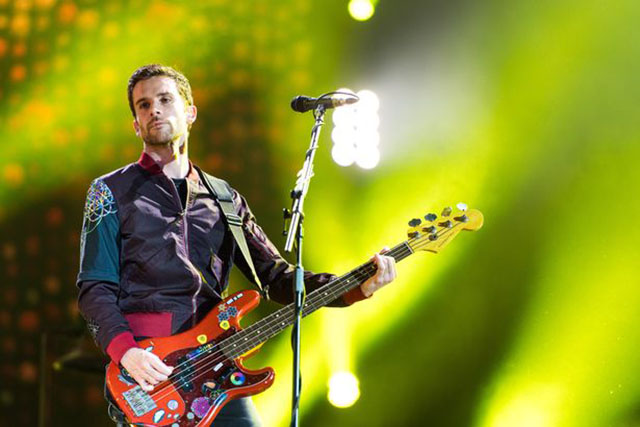
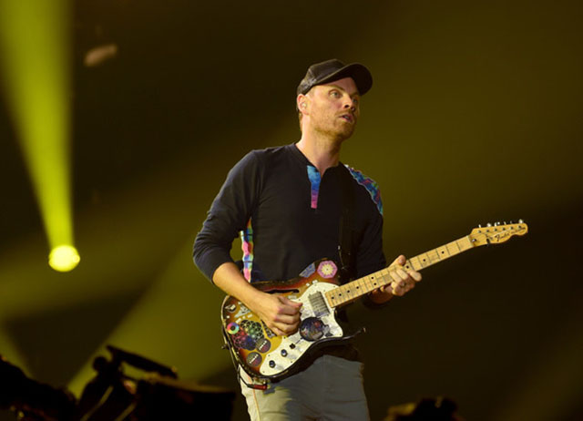
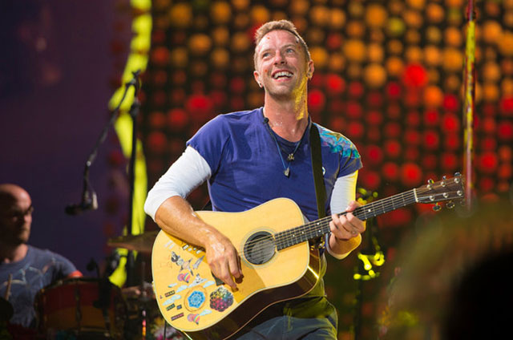
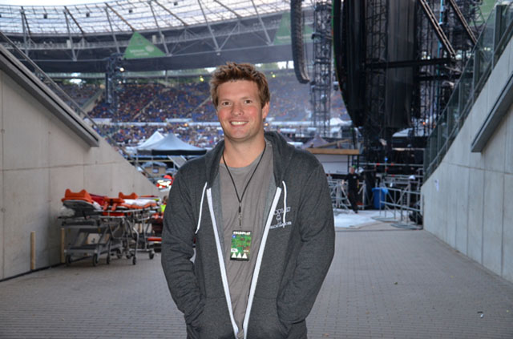

GUY BERRYMAN
ABOUT GUY
| Name | Guy Rupert Berryman |
| Born | 12th of April 1978, in Kirkcaldy, Scotland |
| Years active | 1995 - present |
| Position in the band | Bass, backing vocals |
| Education | Engineering at UCL (Dropped out) |
| Architecture at the Bartlett (UCL) (Dropped out to work on Coldplay) | |
| Trivia | Chris likes to call him the handsomest bass player in the world. |
JONNY BUCKLAND
ABOUT JONNY
| Name | Jonathan Mark Buckland |
| Born | 11th of September 1977, in Islington, London, England. |
| Years active | 1995 - present |
| Position in the band | (Electric) Guitar, backing vocals |
| Education | Astronomy and Mathematics at UCL |
| Trivia | His guitar playing style is recognised by his sparse arrangements and use of slide. |
WILL CHAMPION
ABOUT WILL
| Name | William Champion |
| Born | 31st of July 1978, in Southampton, Hampshire, England. |
| Years active | 1995 - present |
| Position in the band | Drums, percussion, backing vocals (and sometimes piano) |
| Education | Anthropology at UCL |
| Trivia | Will is a musical "Mr. Can do it all". Name an instrument and he can probably play it. |
CHRIS MARTIN
ABOUT CHRIS
| Name | Christopher Anthony John Martin |
| Born | 2nd of March 1977, Exeter, Devon, England. |
| Years active | 1996 - present |
| Position in the band | Lead Vocals, (acoustic) Guitar, Piano, keyboard |
| Education | Ancient World Studies at Ramsay Hall (UCL) |
| Trivia | Wherever Chris goes, some Love buttons will always follow him. |
PHIL HARVEY
ABOUT PHIL
| Name | Philip Christopher Hammond Harvey |
| Born | 29th of August 1976, England. |
| Position in the band | (Ex-)manager (But still heavily involved with the band) |
| Education | Classical Studies at Trinity College, Oxford |
| Trivia | Phil is always lovingly called "The secret 5th member". |